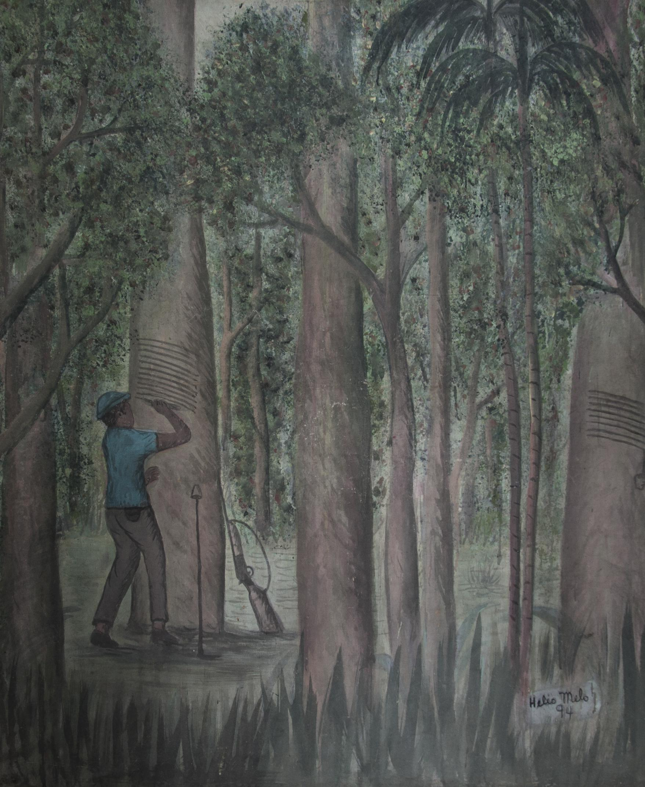

Ambiente Amazônico
Figura 9 - Hélio de Holanda Melo, Sem título [tirando leite da seringa]1994, nanquim,tinta a base d'água e sumos de folhas sobre tela, 152x128 cm. Coleção Sede do Partido dos Trabalhadores (PT), Rio Branco. Fotografia de Talita Oliveira.Acervo: Partido dos Trabalhadores. PT/AC 09/04/2013 (AC).
O artista Hélio Melo, que teve como poética o ambiente amazônico a partir de sua vivência, teve três fases distintas. A primeira fase trata de um inventário da vida do seringueiro e seu modo de vida na floresta. Nesta fase de sua produção artística que compreende o início de sua atividade como artista em 1978 até 1984 Seo Hélio através de seus desenhos faz uma sociologia do Trabalho. A floresta com toda sua grandiosidade aufere dignidade ao trabalhador florestal e neste espaço da mata representado por Seo Hélio, o ambiente é tranquilo, acolhedor, paradisíaco. Esta maneira de representação cria um paradoxo, embora seu trabalho seja penoso, o seringueiro encontra na floresta a razão de viver. Sua pintura é composta por tonalidades de verde, pois para o artista “existe um verde vivo e outras cores que ninguém consegue definir. Enfim, para pintar uma mata do jeito que ela é, sem o sumo das plantas é impossível. ” (MELO,2000, p.144). Na obra de Hélio Melo o sofrimento do seringueiro é suportável, embora a retratação seja de denúncia a forma de representação é singela. O paraíso lhe é tirado quando é obrigado a abandonar o seringal.

Figura 10 - Hélio Melo.“O Homem e o Cavalo” (1996). Nanquim e sumo de folhas sobre papel cartão, 47cmx42cm, Acervo Fátima Melo, Rio Branco (AC).
A análise da obra poderia ser feita por viés diferente, a técnica utilizada, etc., porém, o nosso olhar se embasará no que já foi dito sobre a trajetória de vida do artista, sua visão de mundo, seu engajamento político e na busca da construção de identidade, e o respeito por uma classe de trabalhadores, embora em fase de extinção seja digna de respeito, o seringueiro. No exercício do olhar de pronto verificamos dois personagens, um homem da floresta e um burro. O primeiro com o olhar cabisbaixo, que poderíamos até interpretar como um ato de preocupação. Apreensivo com a floresta e com o sustento da sua família e de outras, pois, este é um individuo da floresta, e dela faz parte. Os troncos (tocos) que agora ornamentam a floresta ou parte dela, um dia foi grandes arvores produtivas, agora uma vegetação rasteira, um pasto, embora o artista não apresente os bois, para a sua composição é passível de entendimento que o antigo seringal hoje é um espaço ocupado para a criação de gado, um negocio mais promissor e mais lucrativo, em busca de atender uma carência de mercado. O segundo personagem uma representação simbólica do proprietário das terras, o patrão, É retratado como um animal, que pela tradição normalmente apresenta grande dificuldade de assimilar os comandos, aprendizagem. Este texto imagético, que o artista nos apresenta traz entre outros elementos um quadrúpede encima de uma árvore uma representação simbólica de um ser imediatista, que desconsidera os reais problemas que um desmatamento poderá causar no futuro. Esta alegoria construída por Seo Hélio é uma visão ambientalista.

Figura 11 Hélio Melo. Sem título, 1982 ou 1992, tinta e extrato de folhas sobre papel cartão ou cartolina, 25 x 35,5 cm, coleção Atelier Pensatório tentamen, Rio Branco-AC.Porque só quem viveu lá dentro é capaz de descobrir os mistérios da natureza através de nossos irmãos índios, donos da floresta.
Na obra de Hélio Melo pode-se ver uma aldeia indígena onde os adultos usam bermudas, as crianças estão nuas e a mulher na rede amamenta um bebê. Pode-se inferir que esta aldeia já manteve contato com homens brancos porque está presente elemento da cultura do homem civilizado: a bermuda. Seo Hélio mantinha uma admiração pelos índios devido ao conhecimento ancestral que detinham sobre como viver na floresta e o respeito por ela, que resultava num estilo de vida baseada na sustentabilidade. No livro O Caucho e a Seringueira, uma coletânea de suas cartilhas publicada em 2000 pela Fundação Elias Mansour (p. 69), Seo Hélio narra a história do índio Lafaiete, da etnia Apurinã, que viveu desde sua infância no Seringal Aripuanã, na região do Rio Acre. Seo Hélio conta que este índio era famoso por sua habilidade de rastejador e mateiro. Neste segmento do livro relata o caso de um rapaz chamado Eduardo, que se perdeu na floresta em 1942, época em que a região de Boca do Acre recebeu um contingente de nordestinos para incrementar a produção da borracha a serviço da Segunda Guerra Mundial. Eduardo passou cinco dias perdido na floresta, amedrontado com os esturros de onça. Totalmente sem noção na floresta, o rapaz andava em círculos e, quando foi encontrado pelo índio Lafaiete, estava prestes a desmaiar, tamanho o cansaço e desgaste físico e mental. Junto com Lafaiete também estavam outros índios, mas somente Lafaiete conseguiu farejar o rastro do rapaz. Segundo Seo Hélio, a habilidade do índio era tamanha que conseguia identificar o calibre da arma disparado na floresta. Esta habilidade era muito rara porque, ao manter contato com os homens brancos, o índio perde muitas de suas habilidades devido ao uso do sal e da cachaça. O índio Lafaiete viveu, segundo os cálculos de Seo Hélio, uns cem anos e faleceu no Seringal Aripuanã em 1989. Seo Hélio concorda com o indianista Meirelles que o melhor para os índios é não manter contato com os brancos. O índio Lafaiete, para Seo Hélio, era uma exceção: mesmo falando muito bem o português, manteve o domínio de sua língua e de sua cultura. A maioria dos índios, de acordo com Seu Hélio, “perdem 69% de sua cultura” (MELO, 2000, p.70) ao se relacionar com o homem branco.
Quando uma tribo assentava acampamento na região e por lá permanecia por um período, a região acampada sofria um impacto de devastação pequeno em relação à imensidão da floresta. A tribo era composta de trinta a quarenta indivíduos que praticavam a coivara, que é a derrubada da mata nativa e posterior queimada da vegetação para a plantação de macaxeira, arroz, milho e feijão. Este regime rudimentar agrícola leva a um esgotamento do solo, sendo necessário um descanso de três a doze anos.